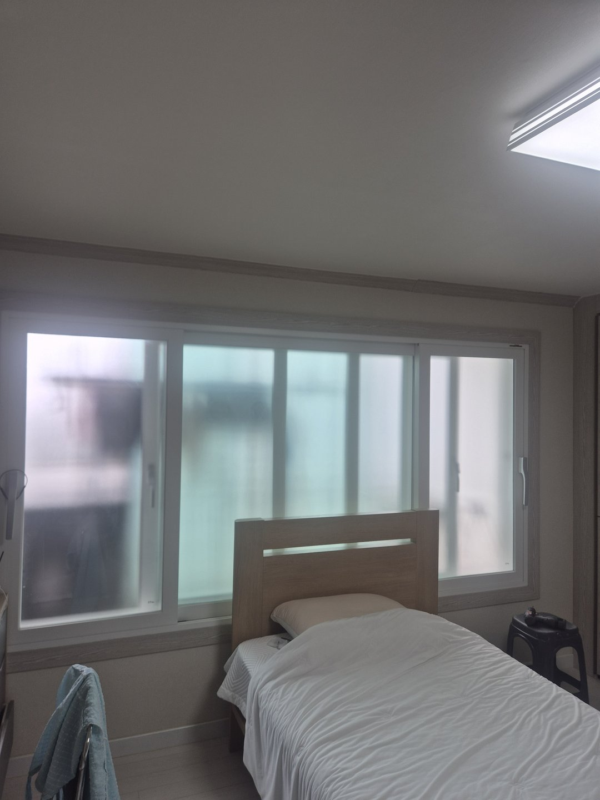
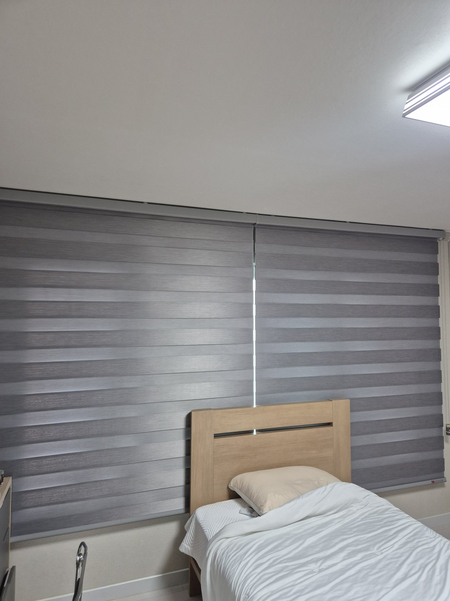
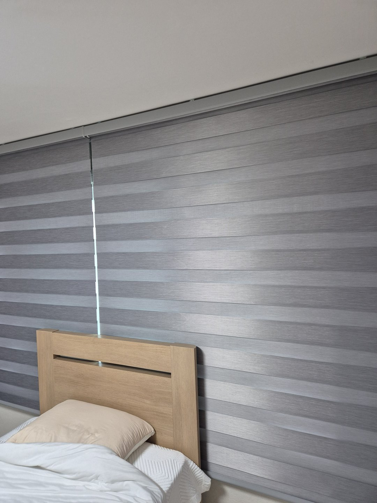
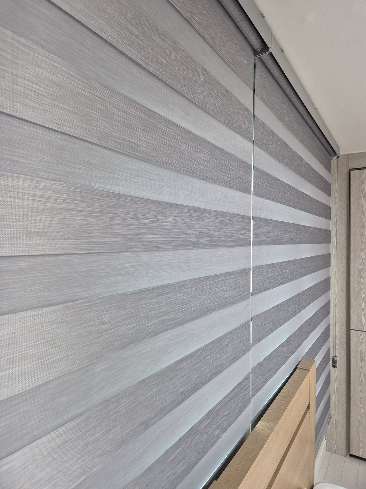
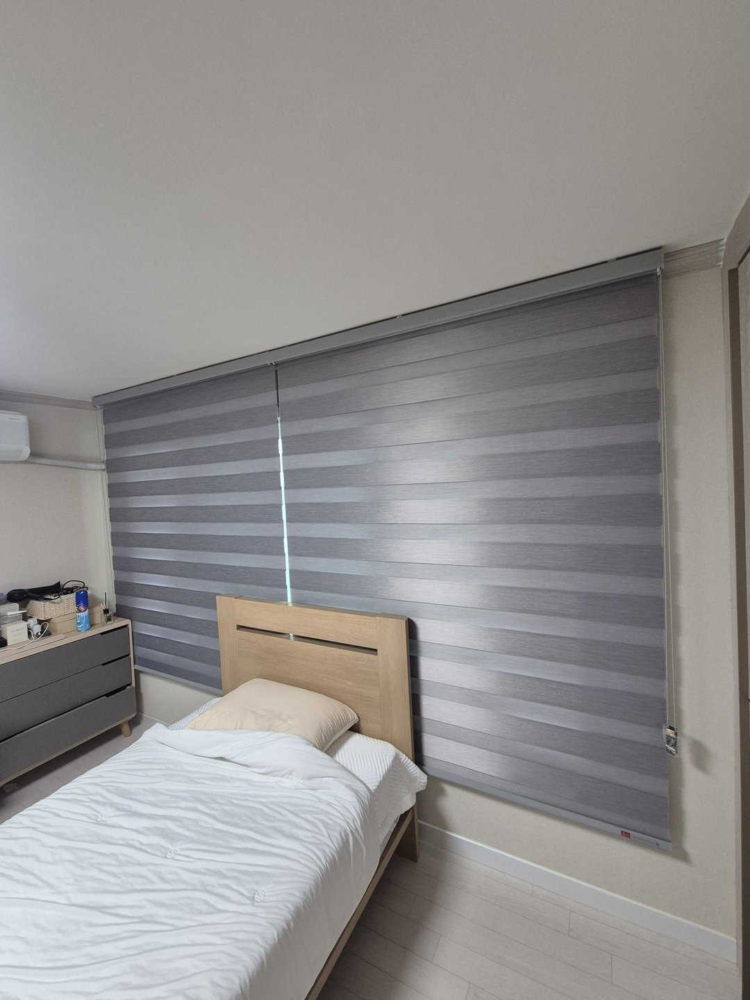
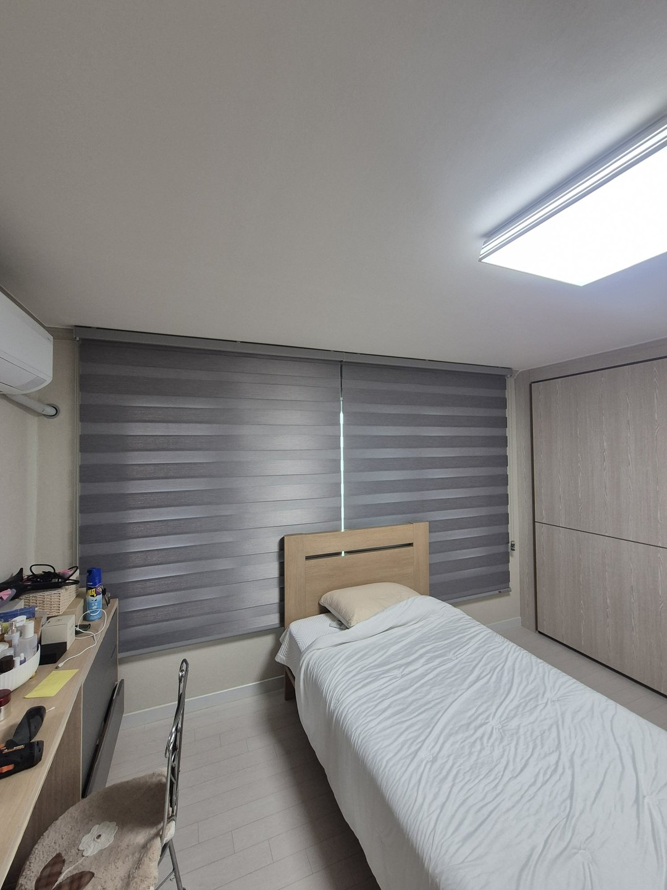
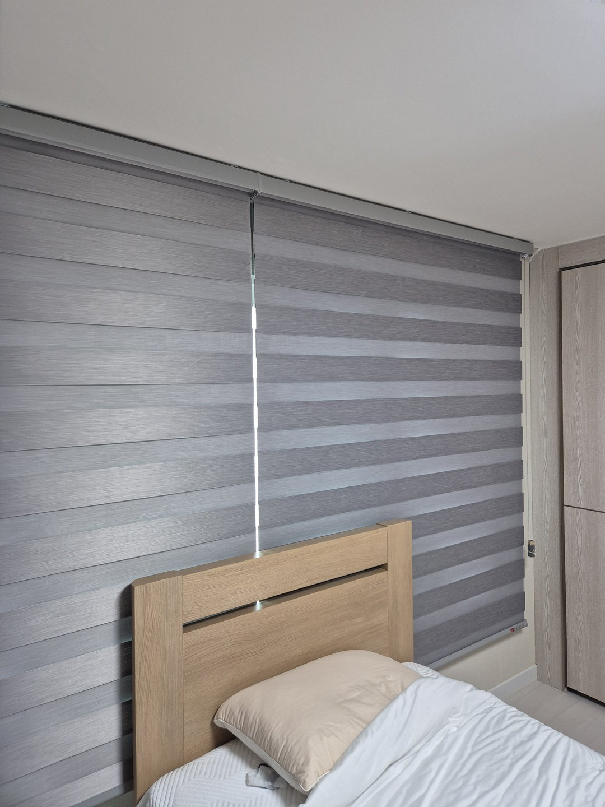

2026년 8월 13일 시공
청도 빌라 안방
그레이 암막 콤비블라인드 시공후기

청도에 있는 빌라 안방 시공입니다. 창이 침대 머리맡 벽에 나 있고, 유리는 이미 뿌옇게 처리되어 밖에서 안이 보이지 않는 상태였습니다.
그런데도 아침이면 방이 환했습니다. 사장님이 상담 때 하신 말씀은 이랬습니다. "가릴 건 다 가린 것 같은데 왜 눈이 부시죠."
뿌연 유리는 빛을 막는 게 아니라 흩뜨립니다
이 현장에서 제일 먼저 설명드린 이야기입니다.
맑은 유리는 빛이 한 방향으로 통과합니다. 그래서 볕이 드는 자리만 밝고 나머지는 어둡습니다. 뿌연 유리는 표면이 거칠어서 그 빛을 사방으로 퍼뜨립니다. 방향을 잃은 빛이 유리 전체로 퍼지면서 창 전체가 하나의 밝은 면이 됩니다.
여기서 중요한 건 들어오는 빛의 총량이 크게 줄지 않는다는 점입니다. 오히려 밝게 보이는 면적은 넓어집니다.
눈은 밝기의 절대값보다 시야 안의 차이에 반응합니다. 누워서 천장을 볼 때 옆으로 넓은 밝은 면이 들어오면 그게 계속 걸립니다. 가려져 있는데 눈이 부신 이유가 여기에 있었습니다.

침대 머리맡 창에는 커튼보다 콤비블라인드입니다
이 방은 침대 헤드보드가 창 앞을 반쯤 물고 있었습니다.
커튼은 주름을 잡아야 모양이 나옵니다. 주름이 접히면 원단에 두께가 생깁니다. 헤드보드와 벽 사이는 그 두께를 받아줄 만큼 넓지 않습니다. 원단이 한쪽으로 몰리거나 헤드보드에 눌려서 구겨집니다.
매일 여닫는 물건인데 여닫을 때마다 손을 넣어 정리해야 하면 결국 안 만지게 됩니다. 안 만지면 조절이 되는 제품을 조절 없이 쓰게 됩니다.
콤비블라인드는 원단이 평평하게 내려옵니다. 헤드보드 뒤에서도 벽에 붙듯이 떨어집니다. 조작은 옆에 있는 줄 하나라서 누운 자리에서 손만 뻗으면 닿습니다.

암막인데 콤비블라인드를 쓸 수 있습니다
콤비블라인드는 진한 띠와 연한 띠가 번갈아 있는 원단이 두 겹으로 겹친 구조입니다. 겹치는 위치를 바꿔서 빛을 조절합니다.
진한 띠끼리 맞추면 빛을 막고, 어긋내면 연한 띠 자리로 빛이 들어옵니다. 그 사이 단계도 조금씩 조절됩니다.
이번에는 암막 원단으로 뽑았습니다. 맞췄을 때 남는 빛이 일반 원단보다 훨씬 적습니다. 낮에는 어긋내서 밝게 쓰고 잘 때만 맞추면 됩니다. 다만 두 겹이 겹치는 구조라 완전한 암실이 되지는 않습니다. 완전한 어둠이 목표라면 암막커튼 쪽이 확실합니다.

창 크기가 아니라 벽 폭으로 뽑았습니다
블라인드를 창 크기에 맞추면 좌우로 벽이 조금씩 남습니다. 그 자리에 단이 생기고, 아침 해가 낮게 들어올 때 그 단으로 빛이 파고듭니다. 벽에 세로로 밝은 선이 하나 생깁니다.
방은 어두운데 그 선만 밝으니 오히려 더 눈에 띕니다. 암막을 달았는데 빛이 샌다고 하시는 경우 대부분이 이 자리입니다. 원단이 부족한 게 아니라 폭이 부족한 것입니다.
그래서 벽 한 면을 덮는 폭으로 뽑았습니다. 파고들 자리가 없어지고, 창이 어디에 있는지도 드러나지 않습니다. 좁은 방에서는 한 면이 통째로 정리되어 넓어 보이는 효과도 같이 옵니다.


두 짝으로 나누되 슬랫 높이를 맞췄습니다
폭이 넓으면 한 짝으로 뽑을 수도 있습니다. 다만 원단이 무거워져서 올리고 내릴 때 힘이 많이 들어가고, 봉도 길어져 가운데가 처질 수 있습니다.
그래서 두 짝으로 나눴습니다. 나누면 가운데에 세로로 얇은 선이 생기는데, 이건 두 짝인 이상 완전히 없애기 어렵습니다. 대신 좌우 틈을 없애서 남는 선을 가운데 하나로 줄였습니다.
여기서 하나 더 챙긴 것이 있습니다. 두 짝을 따로 걸면 띠 높이가 어긋나기 쉽습니다. 왼쪽 진한 띠 자리에 오른쪽은 연한 띠가 오면 나눈 티가 확 납니다. 그래서 두 짝의 슬랫 높이를 맞춰 걸었습니다. 띠가 좌우로 한 줄씩 이어져서 멀리서 보면 한 장처럼 보입니다.

회색으로 고른 이유
이 방은 벽이 밝은 크림색이고 가구가 밝은 나무색이었습니다. 여기에 흰색 블라인드를 걸면 벽에 묻힙니다. 면은 하나가 되는데 밋밋해집니다.
회색은 벽보다 한 톤 어두워서 면이 살아나면서도 튀지 않습니다. 침구가 흰색이라 회색이 배경으로 물러나 줍니다. 다만 방 밝기와 조명 색에 따라 체감은 달라질 수 있습니다.
시공 전에는 이 벽에 창틀 나무색, 창 흰색, 벽 크림색까지 색이 세 개 있었습니다. 블라인드를 걸고 나니 그 셋이 한 색으로 덮였습니다. 방에 남은 색이 줄어들면 시선이 머물 자리가 줄고, 공간이 넓게 읽힙니다.
자주 묻는 질문
Q. 청도도 방문 시공 되나요?
됩니다. 청도, 대구, 경산, 구미, 김천, 칠곡, 성주, 고령 일대는 따솜커튼블라인드 정실장(010-5495-9500)이 직접 방문해 실측하고 시공합니다.
Q. 유리에 시트지를 붙였는데 블라인드가 또 필요할까요?
시트지는 시선을 막는 물건입니다. 빛의 양은 크게 줄지 않고 오히려 밝은 면이 넓어집니다. 아침에 눈이 부시거나 낮잠이 어려우시면 따로 필요합니다.
Q. 콤비블라인드도 암막이 되나요?
암막 원단으로 만든 콤비가 있습니다. 진한 띠를 맞추면 빛이 많이 줄어듭니다. 완전한 암실을 원하시면 암막커튼 쪽이 확실합니다.
Q. 침대가 창에 붙어 있는데 시공이 되나요?
됩니다. 오히려 커튼보다 콤비블라인드 쪽이 헤드보드와 부딪히지 않아 정리가 잘 됩니다.
Q. 창보다 크게 달면 이상하지 않나요?
벽 한 면을 덮는 형태라 오히려 정돈되어 보입니다. 창 위치가 드러나지 않아 좁은 방에서 특히 낫습니다.
Q. 크게 달면 창을 못 열지 않나요?
브래킷을 창틀보다 위, 천장 가까이에 답니다. 다 올리면 창이 거의 그대로 나와서 환기에 걸리는 게 없습니다.
Q. 두 짝으로 나누면 가운데 빛이 새지 않나요?
얇은 선이 남습니다. 두 짝을 최대한 붙이고 좌우 틈을 없애서 줄이는 쪽으로 잡습니다. 완전 차단이 목표면 그 앞에 암막커튼을 한 겹 더 거는 방법이 있습니다.
Q. 관리는 어떻게 하나요?
마른 걸레로 눌러 닦으시면 됩니다. 물수건으로 세게 문지르면 원단이 상할 수 있습니다.
마무리
가려진 것과 어두운 것은 다릅니다. 유리는 시선을 맡고 블라인드는 빛의 양을 맡습니다. 두 가지를 한 물건이 다 해주기를 기대하면 어느 한쪽이 아쉬워집니다.
아침에 눈이 부시다면 유리가 아니라 그 앞을 한 겹 더 보시면 됩니다.
비슷한 시공이 필요하신가요?
창 전체가 나오게 찍은 사진 한 장 주시면 방문 전에 견적을 알려드립니다.
창 앞에 침대나 책상이 붙어 있다면 그것도 같이 나오게 찍어주시면 더 정확합니다.